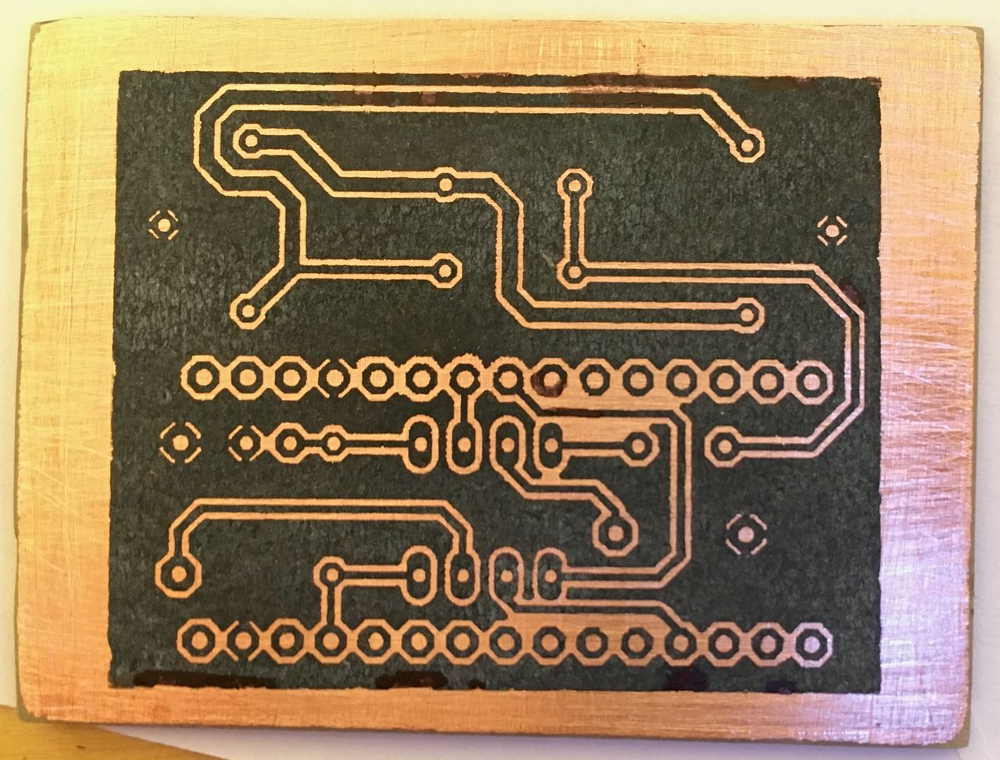

Electronics
Light Organ

This Arduino project was the perfect way to try out the toner transfer method: To control LEDs in time with the rhythm of the music, only the voltage of the low frequencies is measured. The audio signal is fed through and tapped via two AUX jacks. The required layout is first printed onto coated paper using a laser printer and then transferred to the copper circuit board using an iron.
